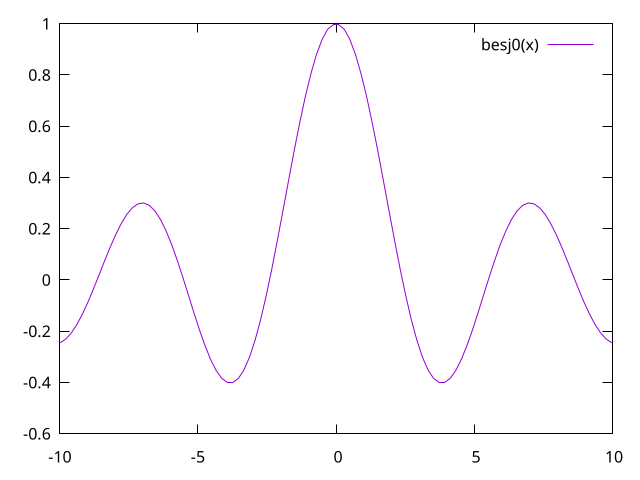
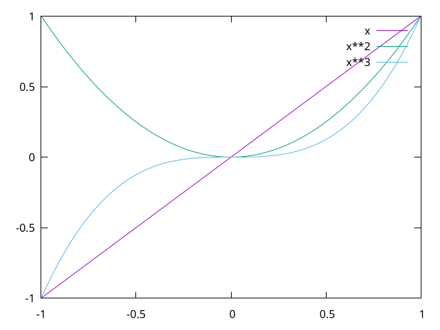
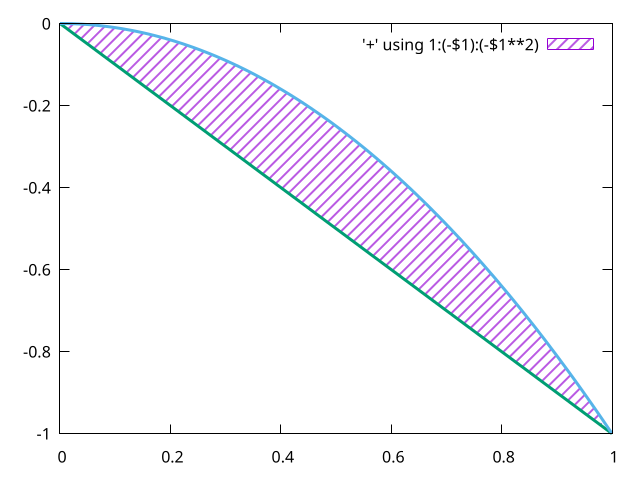
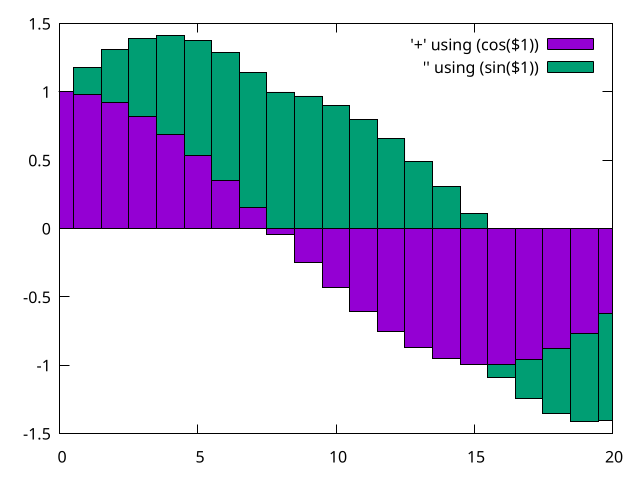

Gnuplot is a portable command-line driven graphing utility for Linux, OS/2, MS Windows, OSX, VMS, and many other platforms. The source code is copyrighted but freely distributed (i.e., you don't have to pay for it). It was originally created to allow scientists and students to visualize mathematical functions and data interactively, but has grown to support many non-interactive uses such as web scripting. It is also used as a plotting engine by third-party applications like Octave. Gnuplot has been supported and under active development since 1986.
我等科研狗选择的图形界面绘图工具一般是 Origin，无奈 Origin 并不支持 Linux，另一 方面希望选择一款命令行下的绘图工具可以更好地整合至我的工作流中。Linux 中可供选择 的主要有 Gnuplot 和 Matplotlib，Matplotlib 是 Python 的一个第三方模块，可生成印 制质量的数据图。但是当我看到 Gnuplot 的官方 Demo 时，一下就让我心动了，Gnuplot 的默认配色也太好看了，清新淡雅。
在 Gnuplot 的交互式命令行中使用 test 命令可以调出调色板，查看 Gnuplot 支持的样式
与配色。
绘制一条简单的曲线
1 reset 2 plot besj0(x)

绘制曲线的同时指定 x 的范围
1 plot [-5:5] (sin(1/x) - cos(x))*erfc(x)

将函数的数据写入到文件
1 set table 'f1.dat' 2 plot [-5:5] (sin(1/x) - cos(x))*erfc(x) 3 unset table
绘制多条曲线
1 plot [-1:1] x, x**2, x**3

使用文件中的数据进行绘制
1 plot [-1:1] 'f1.dat' with lines lw 1, -x, -x**3

绘制双 y 轴图， set y2tics start, sep 设置 y2 轴的起始值以及间隔
1 set y2tics -100, 20 2 set ytics nomirror 3 plot sin(1/x) axis x1y1,100*cos(x) axis x1y2

设定采样数
1 reset 2 set sample 100000 3 set x2tics -20, 2 4 set xtics nomirror 5 plot sin(1/x) axis x1y1, 100*cos(x-1) axis x2y2

绘制散点图
1 reset 2 plot 'f1.dat' with points pt 7

绘制盒形图，其中 set style 有以下几种取值
set style fill empty不进行填充set style fill pattern填充图案set style fill solid填充颜色
1 reset 2 set style fill pattern 3 plot [-6:6] besj0(x) with boxes, sin(x) with boxes, cos(x) with boxes

绘制圆圈图，圆圈图需要 3 列数据， x:y:r
1 reset 2 plot '+' using 1:(sin($1)):(cos($1)+1) with circles

填充曲线
1 reset 2 set style fill solid 3 plot [0:20] besy0(x) with filledcurves above y1=0

曲线填充也不用真实的文件，这里的 + 表示一个虚拟文件，其中的第一列是由 Gnuplot 自
动生成的 x 采样值
1 reset 2 set style fill pattern 5 3 plot [0:1] '+' using 1:(-$1):(-$1**2) with filledcurves, -x lw 3 notitle, -x**2 lw 3 notitle

以直方图的形式绘制曲线
1 reset 2 plot [-10:10] sin(x) with histeps

并排的直方图
1 reset 2 set style fill solid 1.0 border lt -1 3 set style data histograms 4 plot [0:20] '+' using (cos($1)), '' using (sin($1))

叠加的直方图
1 reset 2 set style fill solid 1.0 border lt -1 3 set style data histograms 4 # 數據會按行進行累加，如果沒有這行，默認是多組數據並排 5 set style histogram rowstacked 6 plot [0:20] '+' using (cos($1)), '' using (sin($1))

绘制带误差条的点图
1 reset 2 set sample 30 3 set pointsize 3 4 # errorbar 的宽度 5 set bars 3 6 plot [0:10] '+' using 1:(sin($1)):(0.5*cos($1)) with errorbars,\ 7 '' using 1:(sin($1)) pt 7 notitle

1 reset 2 set sample 30 3 set bars 3 4 set style fill pattern 2 border lt -1 5 plot [0:10] '+' using 1:(sin($1)):(0.5*cos($1)) with boxerrorbars

棒状图
1 set samples 30 2 plot [0:2*pi] sin(x) with impulses lw 2

绘制参数方程曲线
1 set samples 1000 2 set parametric 3 plot sin(7*t), cos(11*t) notitle

极坐标绘图
1 reset 2 set size ratio 1 3 set xtics axis nomirror 4 set ytics axis nomirror 5 set zeroaxis 6 unset border 7 set samples 500 8 set polar 9 plot [0:12*pi] t